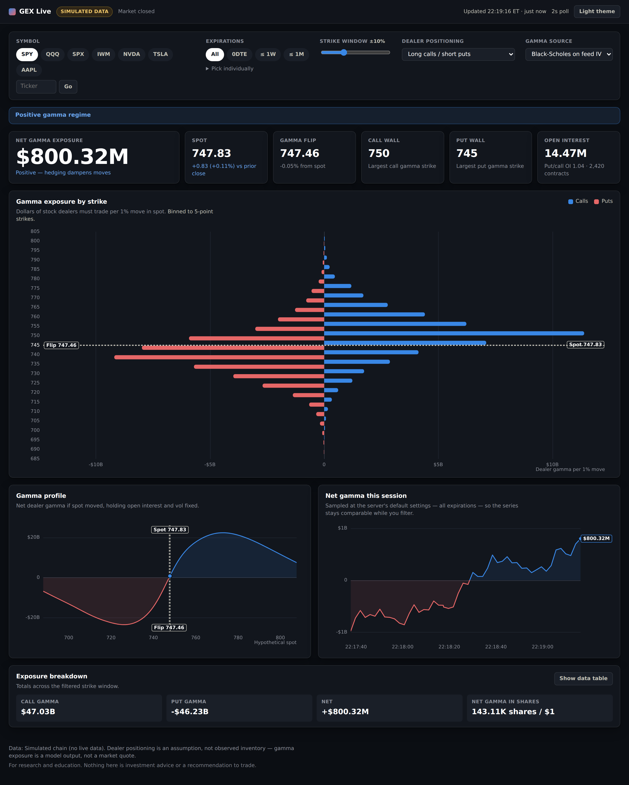

What it explores
GEX separates pricing calculations, provider adapters, and the streaming server. The browser visualizes options exposure while the server shares one upstream polling loop per symbol across viewers.
An options chain, made readable.

Streaming analytics dashboard
Pricing calculations, shared polling, and failure handling
GEX separates pricing calculations, provider adapters, and the streaming server. The browser visualizes options exposure while the server shares one upstream polling loop per symbol across viewers.
An options dashboard needs consistent calculations and clear feed behavior. Multiple viewers should not multiply upstream polling, and stale or failed feeds need to be handled explicitly.
Computed Black-Scholes gamma from option-chain inputs and displayed exposure by strike, gamma-flip levels, and call/put walls.
Integrated Cboe delayed data and a Tradier adapter, with shared polling and client-specific Server-Sent Events.
Checked gamma against numerical derivatives and covered market calendars, upstream failures, and idle stream restarts.
Dealer positioning is modeled using explicit assumptions. Data latency depends on the provider. The interface screenshot shows simulation mode, not a live market feed.